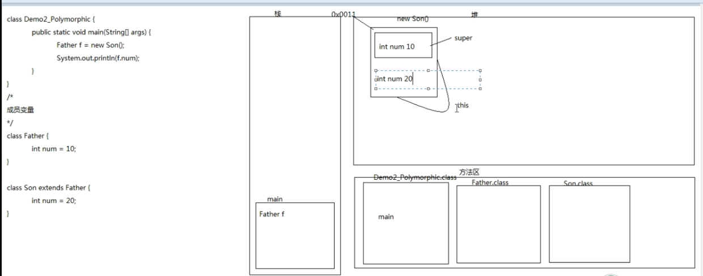
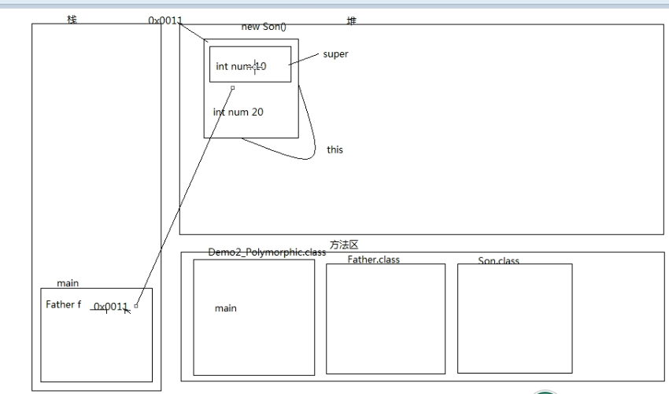
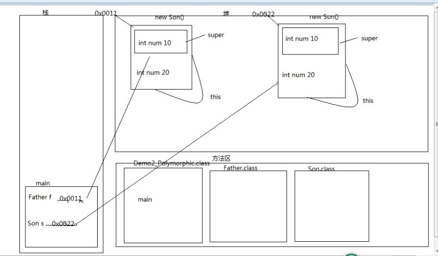
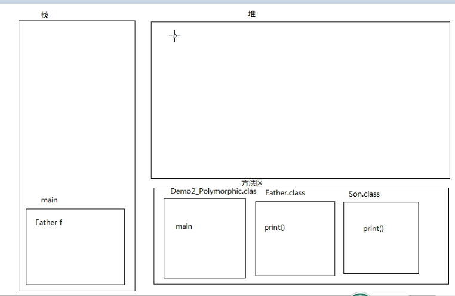
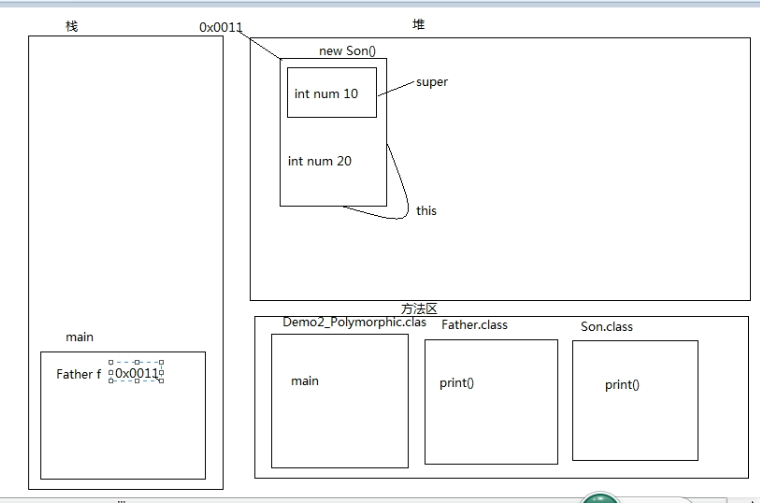
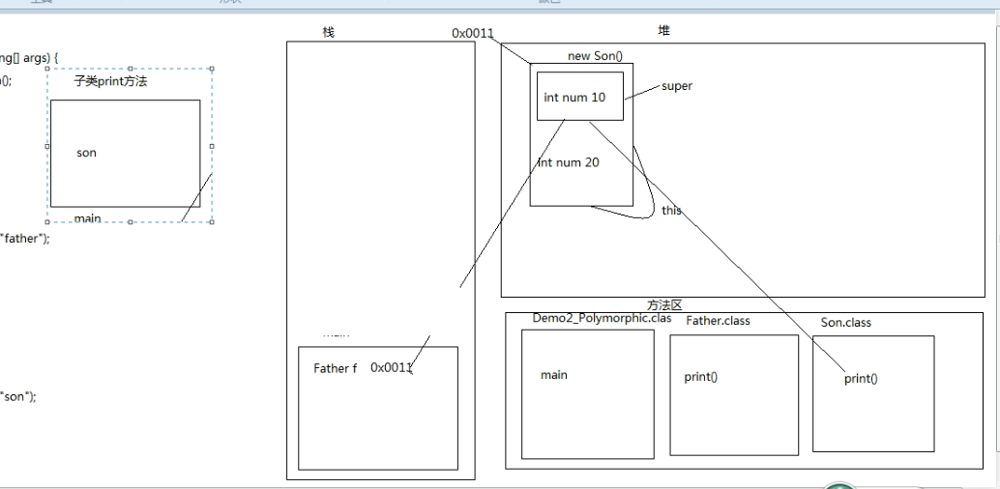
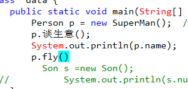
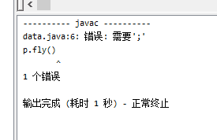
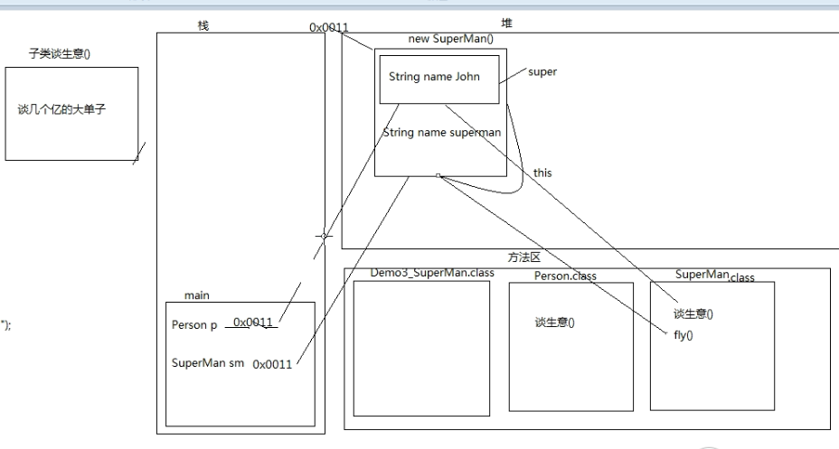
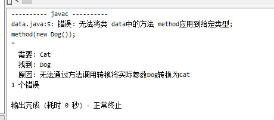

009-day09多态
09.01 面向对象(多态的概述及其代码体现)¶
- A: 多态概述
- 事物存在的多种形态(一只猫既是猫又是动物)
- B 多态前提
- a:要有继承关系
- b: 要有方法重写
- c:要有父类引用指向子类对象
- C:案例演示
- 代码体现多态
class data { public static void main(String[] args) { Cat c = new Cat(); c.eat(); Animal a = new Cat(); //父类引用指向子类对象,从右往左读,猫是一个动物 a.eat(); //是在描述猫 } } /* * A: 多态概述 * 事物存在的多种形态(一只猫既是猫又是动物) * B 多态前提 * a:要有继承关系 * b: 要有方法重写 * c:要有父类引用指向子类对象 * C:案例演示 * 代码体现多态 */ class Animal { public void eat() { System.out.println("动物吃饭"); } } class Cat extends Animal { public void eat() { System.out.println("猫吃鱼") ; //方法重写 } }
执行结果:
猫吃鱼 猫吃鱼 请按任意键继续. . .
09.02 ()面向对象多态中的成员访问特点之成员变量)¶
- 成员变量
- 编译看左边(父类),运行看左边(父类)
class data { public static void main(String[] args) { Father f = new Son(); //父类引用指向子类对象 System.out.println(f.num); } } /* 成员变量 */ class Father { int num = 10; } class Son extends Father { int num = 20; }
执行结果: f是一个Father引用,只能看到super区域的10
10 请按任意键继续. . .


class data { public static void main(String[] args) { Father f = new Son(); //父类引用指向子类对象 System.out.println(f.num); Son s =new Son(); System.out.println(s.num); } } /* 成员变量 */ class Father { int num = 10; } class Son extends Father { int num = 20; }
执行结果:
10 请按任意键继续. . .

09.03 面向对象(多态中的成员访问方法之成员方法)¶
- 成员方法
- 编译看左边，运行看右边
class data { public static void main(String[] args) { Father f = new Son(); //父类引用指向子类对象 f.print(); // Son s =new Son(); // System.out.println(s.num); } } /* 成员变量 */ class Father { int num = 10; public void print() { System.out.println("Father"); } } class Son extends Father { int num = 20; public void print() { System.out.println("Son"); } }
执行结果:
Son 请按任意键继续. . .

 
### 09.04_面向对象（多态中的成员访问特点之静态成员方法）
- 静态方法
- 编译看左边（父类），运行看左边（父类）。
- 静态和类相关，算不上重写，所以，访问还是左边的）
- 只有非静态的成员方法，编译看左边，运行看右边
class data { public static void main(String[] args) { Father f = new Son(); //父类引用指向子类对象 f.method(); // Son s =new Son(); // System.out.println(s.num); } } /* 成员变量 */ class Father { int num = 10; public void print() { System.out.println("Father"); } public static void method(){ System.out.println("father static methon"); } } class Son extends Father { int num = 20; public void print() { System.out.println("Son"); } public static void method(){ System.out.println("Son static methon"); } }
执行结果
father static methon 请按任意键继续. . .
09.05 面向对象(超人的故事):¶
案例分析
- 通过该案例帮助学生理解多态的现象
class data { public static void main(String[] args) { Person p = new SuperMan(); //父类引用指向子类对象,超人提升为人 p.谈生意(); System.out.println(p.name); // Son s =new Son(); // System.out.println(s.num); } } /* 成员变量 */ class Person{ String name="John"; public void 谈生意(){ System.out.println("谈生意"); } } class SuperMan extends Person{ String name="superMan"; public void 谈生意(){ System.out.println("谈几个亿的大单子"); } public void fly(){ System.out.println("飞去救人"); } }
执行结果:
谈几个亿的大单子 John 请按任意键继续. . .
 
09.06 面向对象(多态中向上转型向下转型)¶
案例演示详细讲解向上向下转型
class data { public static void main(String[] args) { Person p = new SuperMan(); //父类引用指向子类对象,超人提升为人 //父类引用指向子类对象就是向上转型 p.谈生意(); System.out.println(p.name); SuperMan sm =(SuperMan)p; //向下转型 sm.fly(); //p.fly() // Son s =new Son(); // System.out.println(s.num); } } /* 成员变量 */ class Person{ String name="John"; public void 谈生意(){ System.out.println("谈生意"); } } class SuperMan extends Person{ String name="superMan"; public void 谈生意(){ System.out.println("谈几个亿的大单子"); } public void fly(){ System.out.println("飞去救人"); } }
执行结果:
谈几个亿的大单子 John 飞去救人 请按任意键继续. . .

09.07面向对象（多态的好处和弊端）¶
- A：多态的好处
- a：提高了代码的维护性（继承保证）
- b: 堤高了代码的扩展性（由多态保证）
- B：案例演示
- 多态的好处
- 可以当作形式参数，可以接收任意子类对象
- C：多态的弊端
- 不能使用子类的特有属性和行为。
- D：案例演示 method(Animala) method(Catc)
class data { public static void main(String[] args) { //Cat c1 =new Cat(); method(new Cat()); } public static void method(Cat c) { ////传到这个方法中的意思就是 Cat c =new Cat() c.eat(); } } class Animal { public void eat() { System.out.println("动物吃饭"); } } class Cat extends Animal { public void eat() { System.out.println("猫吃鱼"); } public void catchMouse() { System.out.println("抓老鼠"); } }
执行结果:
猫吃鱼 请按任意键继续. . .
class data { public static void main(String[] args) { //Cat c1 =new Cat(); method(new Cat()); method(new Dog()); } public static void method(Cat c) { c.eat(); } } class Animal { public void eat() { System.out.println("动物吃饭"); } } class Cat extends Animal { public void eat() { System.out.println("猫吃鱼"); } public void catchMouse() { System.out.println("抓老鼠"); } } class Dog extends Animal { public void eat() { System.out.println("狗吃肉"); } public void lookHome() { System.out.println("看家"); } }
执行 
class data { public static void main(String[] args) { //Cat c1 =new Cat(); method(new Cat()); method(new Dog()); } public static void method(Animal a) { //传到这个方法中的意思就是 Cat c =new Cat() a.eat(); } } class Animal { public void eat() { System.out.println("动物吃饭"); } } class Cat extends Animal { public void eat() { System.out.println("猫吃鱼"); } public void catchMouse() { System.out.println("抓老鼠"); } } class Dog extends Animal { public void eat() { System.out.println("狗吃肉"); } public void lookHome() { System.out.println("看家"); } }
执行结果: 调用方式使用父类引用指向子类对象
猫吃鱼 狗吃肉 请按任意键继续. . .
当做参数的使用用多态最好,因为扩展性强
class data { public static void main(String[] args) { //Cat c1 =new Cat(); method(new Cat()); method(new Dog()); } //当做参数的使用用多态最好,因为扩展性强 public static void method(Animal a) { //传到这个方法中的意思就是 Cat c =new Cat() a.eat(); } } class Animal { public void eat() { System.out.println("动物吃饭"); } } class Cat extends Animal { public void eat() { System.out.println("猫吃鱼"); } public void catchMouse() { System.out.println("抓老鼠"); } } class Dog extends Animal { public void eat() { System.out.println("狗吃肉"); } public void lookHome() { System.out.println("看家"); } }
弊端,不能使用子类的特有属性和行为,进行强转
class data { public static void main(String[] args) { //Cat c1 =new Cat(); method(new Cat()); method(new Dog()); } //当做参数的使用用多态最好,因为扩展性强 //如果把狗强转成猫就会出现类型转换异常, //猫吃鱼 /*抓老鼠 Exception in thread "main" java.lang.ClassCastException: Dog cannot be cast to Cat at data.method(data.java:10) at data.main(data.java:5) 请按任意键继续. . . */ public static void method(Animal a) { //传到这个方法中的意思就是 Cat c =new Cat() Cat c =(Cat)a ;//进行强转 c.eat() ; c.catchMouse() ; } } class Animal { public void eat() { System.out.println("动物吃饭"); } } class Cat extends Animal { public void eat() { System.out.println("猫吃鱼"); } public void catchMouse() { System.out.println("抓老鼠"); } } class Dog extends Animal { public void eat() { System.out.println("狗吃肉"); } public void lookHome() { System.out.println("看家"); } }
执行结果:对猫进行强转不会出问题,但是对狗进行强转是会出问题的.狗和猫都是动物但是狗不是猫
猫吃鱼 抓老鼠 Exception in thread "main" java.lang.ClassCastException: Dog cannot be cast to Cat at data.method(data.java:10) at data.main(data.java:5) 请按任意键继续. . .
使用关键字 instanseof 判断前边的引用是否是后边的数据类型
class data { public static void main(String[] args) { //Cat c1 =new Cat(); method(new Cat()); method(new Dog()); } //当做参数的使用用多态最好,因为扩展性强 //如果把狗强转成猫就会出现类型转换异常, public static void method(Animal a) { //传到这个方法中的意思就是 Cat c =new Cat() if(a instanceof Cat) { //如果a是一个猫类型的就进行强转 Cat c =(Cat)a ;//进行强转 c.eat() ; c.catchMouse() ; } else if(a instanceof Dog) { Dog d =(Dog)a; //如果a是一个狗类型的就进行强转 d.eat(); d.lookHome(); } else { a.eat(); } } } class Animal { public void eat() { System.out.println("动物吃饭"); } } class Cat extends Animal { public void eat() { System.out.println("猫吃鱼"); } public void catchMouse() { System.out.println("抓老鼠"); } } class Dog extends Animal { public void eat() { System.out.println("狗吃肉"); } public void lookHome() { System.out.println("看家"); } }
执行结果:
猫吃鱼 抓老鼠 狗吃肉 看家 请按任意键继续. . .
一般开发中不这样使用,了解一下instanceof关键字就好了
例子
/* 多态的弊端： 不能使用子类的特有功能。 我就想使用子类的特有功能?行不行? 行。 怎么用呢? A:创建子类对象调用方法即可。(可以，但是很多时候不合理。而且，太占内存了) B:把父类的引用强制转换为子类的引用。(向下转型) 对象间的转型问题： 向上转型： Fu f = new Zi(); 向下转型： Zi z = (Zi)f; //要求该f必须是能够转换为Zi的。 */ class Fu { public void show() { System.out.println("show fu"); } } class Zi extends Fu { public void show() { System.out.println("show zi"); } public void method() { System.out.println("method zi"); } } class data { public static void main(String[] args) { //测试 Fu f = new Zi(); f.show(); //不管子类有没有重写父类的这个方法,都是可以运行的,就是子类继承了父类的方法 //f.method(); //编译看左边,父类没有这个方法无法编译 //创建子类对象 //Zi z = new Zi(); //z.show(); //z.method(); //你能够把子的对象赋值给父亲，那么我能不能把父的引用赋值给子的引用呢? //如果可以，但是如下 /*Zi z = (Zi)f; z.show(); z.method(); */ } }
执行结果
show zi 请按任意键继续. . .
看程序写结过:
/* 看程序写结果:先判断有没有问题，如果没有，写出结果 多态的成员访问特点： 方法：编译看左边，运行看右边。 继承的时候： 子类中有和父类中一样的方法，叫重写。 子类中没有父亲中出现过的方法，方法就被继承过来了。 */ public class data { public static void main(String[] args) { A a = new B(); a.show(); //执行的是子类的show2方法,先执行的是父类的show,然后show调用子类的show2 B b = new C(); b.show(); } } class A { public void show() { show2(); } public void show2() { System.out.println("我"); } } class B extends A { /* public void show() { show2(); } */ public void show2() { System.out.println("爱"); } } class C extends B { public void show() { super.show(); } public void show2() { System.out.println("你"); } }
执行结果
爱 你 请按任意键继续. . .
09.09 面向对象(抽象类的概述及其特点)¶
- A: 抽象类概述
- 抽象就是看不懂的
- B 抽象类特点
- a 抽象类和抽象方法必须用abstract关键字修饰
- 格式 • abstract class 类名 {} • public abstract void eat();
- b 抽象类不一定有抽象方法，有抽象方法的类一定是抽 象类
- c 抽象类不能实例化 • 那么，抽象类如何实例化呢? • 按照多态的方式，由具体的子类实例化。其实这也是多态的 一种，抽象类多态。
- d 抽象类的子类 • 要么是抽象类 • 要么重写抽象类中的所有抽象方法 实例:
- a 抽象类和抽象方法必须用abstract关键字修饰
/* 抽象类的概述： 动物不应该定义为具体的东西，而且动物中的吃，睡等也不应该是具体的。 我们把一个不是具体的功能称为抽象的功能，而一个类中如果有抽象的功能，该类必须是抽象类。 抽象类的特点： A:抽象类和抽象方法必须用abstract关键字修饰 B:抽象类中不一定有抽象方法,但是有抽象方法的类必须定义为抽象类 C:抽象类不能实例化 因为它不是具体的。 抽象类有构造方法，但是不能实例化?构造方法的作用是什么呢? 用于子类访问父类数据的初始化 D:抽象的子类 a:如果不想重写抽象方法，该子类是一个抽象类。 b:重写所有的抽象方法，这个时候子类是一个具体的类。 抽象类的实例化其实是靠具体的子类实现的。是多态的方式。 Animal a = new Cat(); */ //abstract class Animal //抽象类的声明格式 abstract class Animal { //抽象类 //抽象方法 //public abstract void eat(){} //空方法体,这个会报错。抽象方法不能有主体 public abstract void eat(); public Animal(){} } //子类是抽象类 abstract class Dog extends Animal {} //子类是具体类，重写抽象方法 class Cat extends Animal { public void eat() { System.out.println("猫吃鱼"); } } class AbstractDemo { public static void main(String[] args) { //创建对象 //Animal是抽象的; 无法实例化 //Animal a = new Animal(); //通过多态的方式 Animal a = new Cat(); //父类引用指向子类对象 a.eat(); } } ```` 执行结果: ```java 猫吃鱼 请按任意键继续. . .
/* 抽象类的成员特点： 成员变量：既可以是变量，也可以是常量。 构造方法：有。 用于子类访问父类数据的初始化。 成员方法：既可以是抽象的，也可以是非抽象的。 抽象类的成员方法特性： A:抽象方法 强制要求子类做的事情。 B:非抽象方法 子类继承的事情，提高代码复用性。 */ abstract class Animal { public int num = 10; public final int num2 = 20; public Animal() {} public Animal(String name,int age){} public abstract void show(); public void method() { System.out.println("method"); } } class Dog extends Animal { public void show() { System.out.println("show Dog"); } } class AbstractDemo2 { public static void main(String[] args) { //创建对象 Animal a = new Dog(); a.num = 100; System.out.println(a.num); //a.num2 = 200; System.out.println(a.num2); System.out.println("--------------"); a.show(); a.method(); } }
public class data { public static void main(String[] args) { 岳不群 小岳子 = new 岳不群(); 小岳子.自宫(); } } abstract class 葵花宝典 { public abstract void 自宫(); } class 岳不群 extends 葵花宝典 { public void 自宫(){ System.out.println("用牙签"); } } class 林平之 extends 葵花宝典 { public void 自宫(){ System.out.println("用指甲刀"); } } class 东方不败 extends 葵花宝典 { public void 自宫(){ System.out.println("用锤子"); } }
执行结果:
用牙签 请按任意键继续. . .
猫狗案例
/* 猫狗案例 具体事物：猫，狗 共性：姓名，年龄，吃饭 分析：从具体到抽象 猫: 成员变量：姓名，年龄 构造方法：无参，带参 成员方法：吃饭(猫吃鱼) 狗: 成员变量：姓名，年龄 构造方法：无参，带参 成员方法：吃饭(狗吃肉) 因为有共性的内容，所以就提取了一个父类。动物。 但是又由于吃饭的内容不一样，所以吃饭的方法是抽象的， 而方法是抽象的类，类就必须定义为抽象类。 抽象动物类： 成员变量：姓名，年龄 构造方法：无参，带参 成员方法：吃饭(); 实现：从抽象到具体 动物类: 成员变量：姓名，年龄 构造方法：无参，带参 成员方法：吃饭(); 狗类： 继承自动物类 重写吃饭(); 猫类： 继承自动物类 重写吃饭(); */ //定义抽象的动物类 abstract class Animal { //姓名 private String name; //年龄 private int age; public Animal() {} public Animal(String name,int age) { this.name = name; this.age = age; } public String getName() { return name; } public void setName(String name) { this.name = name; } public int getAge() { return age; } public void setAge(int age) { this.age = age; } //定义一个抽象方法 public abstract void eat(); //会强制子类进行重写,用就得重写 } //定义具体的狗类 class Dog extends Animal { public Dog() {} public Dog(String name,int age) { super(name,age); } public void eat() { System.out.println("狗吃肉"); } } //定义具体的猫类 class Cat extends Animal { public Cat() {} public Cat(String name,int age) { super(name,age); } public void eat() { System.out.println("猫吃鱼"); } } //测试类 class AbstractTest { public static void main(String[] args) { //测试狗类 //具体类用法 //方式1： Dog d = new Dog(); d.setName("旺财"); d.setAge(3); System.out.println(d.getName()+"---"+d.getAge()); d.eat(); //方式2： Dog d2 = new Dog("旺财",3); System.out.println(d2.getName()+"---"+d2.getAge()); d2.eat(); System.out.println("---------------------------"); Animal a = new Dog(); a.setName("旺财"); a.setAge(3); System.out.println(a.getName()+"---"+a.getAge()); a.eat(); Animal a2 = new Dog("旺财",3); System.out.println(a2.getName()+"---"+a2.getAge()); a2.eat(); //练习：测试猫类 } }
- 案例 老师抽象类
/* 老师案例 具体事物：基础班老师，就业班老师 共性：姓名，年龄，讲课。 分析： 基础班老师 姓名，年龄 讲课。 就业班老师 姓名，年龄 讲课。 实现： 老师类 基础班老师 就业班老师 */ //定义抽象的老师类 abstract class Teacher { //姓名 private String name; //年龄 private int age; //私有属性 public Teacher() {} //空参构造 public Teacher(String name,int age) { //有参构造 this.name = name; this.age = age; } public String getName() { return name; } public void setName(String name) { this.name = name; } public int getAge() { return age; } public void setAge(int age) { this.age = age; } //抽象方法 public abstract void teach(); //讲课的抽象方法,下面的要是用就必须重写这个方法 } //基础班老师类 class BasicTeacher extends Teacher { public BasicTeacher(){} //空参构造 public BasicTeacher(String name,int age) { //有参构造 super(name,age); //使用的是父类的构造方法 } public void teach() { System.out.println("基础班老师讲解JavaSE"); //抽象方法的重写 } } //就业班老师类 class WorkTeacher extends Teacher { public WorkTeacher(){} public WorkTeacher(String name,int age) { super(name,age); } public void teach() { System.out.println("就业班老师讲解JavaEE"); } } class AbstractTest2 { public static void main(String[] args) { //具体的类测试，自己玩 //测试(多态) //基础班老师 Teacher t = new BasicTeacher(); t.setName("刘意"); t.setAge(30); System.out.println(t.getName()+"---"+t.getAge()); t.teach(); System.out.println("--------------"); t = new BasicTeacher("刘意",30); System.out.println(t.getName()+"---"+t.getAge()); t.teach(); System.out.println("--------------"); //就业班老师 t = new WorkTeacher(); t.setName("林青霞"); t.setAge(27); System.out.println(t.getName()+"---"+t.getAge()); t.teach(); System.out.println("--------------"); t = new WorkTeacher("林青霞",27); System.out.println(t.getName()+"---"+t.getAge()); t.teach(); } } ```` 执行结果: ```java 刘意---30 基础班老师讲解JavaSE -------------- 刘意---30 基础班老师讲解JavaSE -------------- 林青霞---27 就业班老师讲解JavaEE -------------- 林青霞---27 就业班老师讲解JavaEE 请按任意键继续. . .
员工类:
/* 假如我们在开发一个系统时需要对员工类进行设计，员工包含3个属性：姓名、工号以及工资。 经理也是员工，除了含有员工的属性外，另为还有一个奖金属性。 请使用继承的思想设计出员工类和经理类。要求类中提供必要的方法进行属性访问。 分析： 普通员工类 成员变量：姓名、工号以及工资。 成员方法：工作 经理类： 成员变量：姓名、工号以及工资，奖金属性 成员方法：工作 实现： 员工类： 普通员工类： 经理类： */ //定义员工类 abstract class Employee { //姓名、工号以及工资 private String name; private String id; private int salary; public Employee() {} public Employee(String name,String id,int salary) { this.name = name; this.id = id; this.salary = salary; } public String getName() { return name; } public void setName(String name) { this.name = name; } public String getId() { return id; } public void setId(String id) { this.id = id; } public int getSalary() { return salary; } public void setSalary(int salary) { this.salary = salary; } //工作 public abstract void work(); //员工的工作不一样,只要是继承使用就必须要重写方法 } //普通员工类 class Programmer extends Employee { public Programmer(){} public Programmer(String name,String id,int salary) { super(name,id,salary); } public void work() { System.out.println("按照需求写代码"); } } //经理类 class Manager extends Employee { //奖金 private int money; //bonus 奖金 public Manager(){} public Manager(String name,String id,int salary,int money) { super(name,id,salary); this.money = money; } public void work() { System.out.println("跟客户谈需求"); } public int getMoney() { return money; } public void setMoney(int money) { this.money = money; } } class AbstractTest4 { public static void main(String[] args) { //测试普通员工 Employee emp = new Programmer(); emp.setName("林青霞"); emp.setId("czbk001"); emp.setSalary(18000); System.out.println(emp.getName()+"---"+emp.getId()+"---"+emp.getSalary()); emp.work(); System.out.println("-------------"); emp = new Programmer("林青霞","czbk001",18000); System.out.println(emp.getName()+"---"+emp.getId()+"---"+emp.getSalary()); emp.work(); System.out.println("-------------"); /* emp = new Manager(); emp.setName("刘意"); emp.setId("czbk002"); emp.setSalary(8000); emp.setMoney(2000); */ //由于子类有特有的内容，所以我们用子类来测试 Manager m = new Manager(); m.setName("刘意"); m.setId("czbk002"); m.setSalary(8000); m.setMoney(2000); System.out.println(m.getName()+"---"+m.getId()+"---"+m.getSalary()+"---"+m.getMoney()); m.work(); System.out.println("-------------"); //通过构造方法赋值 m = new Manager("刘意","czbk002",8000,2000); System.out.println(m.getName()+"---"+m.getId()+"---"+m.getSalary()+"---"+m.getMoney()); m.work(); } }
执行结果:
林青霞---czbk001---18000 按照需求写代码 ------------- 林青霞---czbk001---18000 按照需求写代码 ------------- 刘意---czbk002---8000---2000 跟客户谈需求 ------------- 刘意---czbk002---8000---2000 跟客户谈需求 请按任意键继续. . .
09 10 抽象类的面试题¶
- 一个类如果没有抽象方法，可不可以定义为抽 象类?如果可以，有什么意义? 可以:这样做的目的只有一个就是不让其它类创建本类对象,交给子类完成
- abstract不能和哪些关键字共存 • private 冲突 • final 冲突 • static 无意义
/* 一个类如果没有抽象方法，可不可以定义为抽象类?如果可以，有什么意义? A:可以。 B:不让创建对象。 abstract不能和哪些关键字共存? private 冲突 abstract定义的想让子类看到并重写,private不想让子类看到 final 冲突 被abstract定义的强制子类重写,但是被final定义的不让子类重写 static 无意义 被static修饰可以使用类名. 调用,但是类名.调用抽象方法是没有意义的 */ abstract class Fu { //public abstract void show(); //非法的修饰符组合: abstract和private //private abstract void show(); //非法的修饰符组合 //final abstract void show(); //非法的修饰符组合 static abstract void show(); public static void method() { System.out.println("method"); } } class Zi extends Fu { public void show() {} } class AbstractDemo3 { public static void main(String[] args) { Fu.method(); } }
09 11面向对象(接口的概述及其特点)¶
-
接口概述 • 继续回到我们的猫狗案例，我们想想狗一般就是看门 ，猫一般就是作为宠物了，对不。但是，现在有很多 的驯养员或者是驯兽师，可以训练出：猫钻火圈，狗 跳高，狗做计算等。而这些额外的动作，并不是所有 猫或者狗一开始就具备的，这应该属于经过特殊的培 训训练出来的，对不。所以，这些额外的动作定义到 动物类中就不合适，也不适合直接定义到猫或者狗中 ，因为只有部分猫狗具备这些功能。所以，为了体现 事物功能的扩展性， Java中就提供了接口来定义这些 额外功能，并不给出具体实现，将来哪些猫狗需要被 培训，只需要这部分猫狗把这些额外功能实现即可。
-
接口的特点：
A:接口用关键字interface表示 interface 接口名 {} B:类实现接口用implements表示 class 类名 implements 接口名 {} C:接口不能实例化 那么，接口如何实例化呢? 按照多态的方式来实例化。 D:接口的子类 a:可以是抽象类。但是意义不大。 b:可以是具体类。要重写接口中的所有抽象方法。(推荐方案)
由此可见： A:具体类多态(几乎没有) B:抽象类多态(常用) C:接口多态(最常用) 案例:
-
/* 接口的特点： A:接口用关键字interface表示 interface 接口名 {} B:类实现接口用implements表示 class 类名 implements 接口名 {} C:接口不能实例化 那么，接口如何实例化呢? 按照多态的方式来实例化。 D:接口的子类 a:可以是抽象类。但是意义不大。 b:可以是具体类。要重写接口中的所有抽象方法。(推荐方案) 由此可见： A:具体类多态(几乎没有) B:抽象类多态(常用) C:接口多态(最常用) */ //定义动物培训接口 interface AnimalTrain { public abstract void jump();//接口中的方法都是抽象的 } //抽象类实现接口 abstract class Dog implements AnimalTrain { } //具体类实现接口 class Cat implements AnimalTrain { public void jump() { System.out.println("猫可以跳高了"); } } class InterfaceDemo { public static void main(String[] args) { //AnimalTrain是抽象的; 无法实例化 //AnimalTrain at = new AnimalTrain(); //at.jump(); AnimalTrain at = new Cat(); //按照多态的方式进行实例化,父类引用指向子类对象 at.jump(); } }
执行结果:
猫可以跳高了 请按任意键继续. . .
09 12面向对象(接口成员的特点)¶
接口成员特点 成员变量 • 只能是常量 • 默认修饰符 public static final 构造方法 • 没有，因为接口主要是扩展功能的，而没有具体存在 成员方法 • 只能是抽象方法 • 默认修饰符 public abstrac
/* 接口成员特点 成员变量；只能是常量，并且是静态的。 默认修饰符：public static final 三个关键字可以互相交换位置 建议：自己手动给出。 构造方法：接口没有构造方法。 成员方法：只能是抽象方法。 默认修饰符：public abstract 建议：自己手动给出。 所有的类都默认继承自一个类：Object。 类 Object 是类层次结构的根类。每个类都使用 Object 作为超类。 */ interface Inter { public int num = 10; public final int num2 = 20; public static final int num3 = 30; //错误: 需要<标识符> //public Inter() {} //接口方法不能带有主体 //public void show() {} //abstract void show(); //默认public public void show(); //默认abstract,只能是抽象方法,接口中的方法必须加上public } //接口名+Impl这种格式是接口的实现类格式 /* class InterImpl implements Inter { public InterImpl() { super(); } } */ class InterImpl extends Object implements Inter { //默认继承的是object类 public InterImpl() { super(); } public void show() {} } //测试类 class InterfaceDemo2 { public static void main(String[] args) { //创建对象 Inter i = new InterImpl(); System.out.println(i.num); System.out.println(i.num2); //i.num = 100; //i.num2 = 200; //System.out.println(i.num); //无法为最终变量num分配值 //System.out.println(i.num2);//无法为最终变量num2分配值 System.out.println(Inter.num); System.out.println(Inter.num2); System.out.println("--------------"); } }
09 13面向对象(类与类,类与接口以及接口与接口的关系)¶
类与类 • 继承关系，只能单继承，但是可以多层继承 类与接口 • 实现关系，可以单实现，也可以多实现。还可以在继 承一个类的同时实现多个接口 接口与接口 • 继承关系，可以单继承，也可以多继承
/* 类与类： 继承关系,只能单继承,可以多层继承。 类与接口： 实现关系,可以单实现,也可以多实现。 并且还可以在继承一个类的同时实现多个接口。 接口与接口： 继承关系,可以单继承,也可以多继承。 */ interface Father { public abstract void show(); } interface Mother { public abstract void show2(); } interface Sister extends Father,Mother { } //class Son implements Father,Mother //多实现 class Son extends Object implements Father,Mother { //多实现需要重写所有的方法 public void show() { System.out.println("show son"); } public void show2() { System.out.println("show2 son"); } } class InterfaceDemo3 { public static void main(String[] args) { //创建对象 Father f = new Son(); f.show(); //f.show2(); //报错 Mother m = new Son(); //m.show(); //报错 m.show2(); } }
09 13面向对象(抽象类和接口的区别)¶
成员区别 • 抽象类 变量,常量;有抽象方法;抽象方法,非抽象方法 • 接口 常量;抽象方法 关系区别 • 类与类 继承，单继承 • 类与接口 实现，单实现，多实现 • 接口与接口 继承，单继承，多继承 设计理念区别 • 抽象类 被继承体现的是： ”is a”的关系。共性功能 • 接口 被实现体现的是： ”like a”的关系。扩展功能
09 14 面向对象(猫狗案列加入跳高功能)¶
- A 案例演示
- 动物类;姓名年龄,吃饭,睡觉
- 猫和狗
- 动物培训接口:跳高
/* 猫狗案例,加入跳高的额外功能 分析：从具体到抽象 猫： 姓名,年龄 吃饭，睡觉 狗： 姓名,年龄 吃饭，睡觉 由于有共性功能，所以，我们抽取出一个父类： 动物： 姓名,年龄 吃饭(); 睡觉(){} 猫：继承自动物 狗：继承自动物 跳高的额外功能是一个新的扩展功能，所以我们要定义一个接口 接口： 跳高 部分猫：实现跳高 部分狗：实现跳高 实现； 从抽象到具体 使用： 使用具体类 */ //定义跳高接口 interface Jumpping { //跳高功能 public abstract void jump(); } //定义抽象类(共性功能) abstract class Animal { //姓名 private String name; //年龄 private int age; public Animal() {} public Animal(String name,int age) { this.name = name; this.age = age; } public String getName() { return name; } public void setName(String name) { this.name = name; } public int getAge() { return age; } public void setAge(int age) { this.age = age; } //吃饭(); public abstract void eat(); //睡觉(){} public void sleep() { System.out.println("睡觉觉了"); } } //具体猫类 class Cat extends Animal { public Cat(){} public Cat(String name,int age) { super(name,age); } public void eat() { System.out.println("猫吃鱼"); } } //具体狗类 class Dog extends Animal { public Dog(){} public Dog(String name,int age) { super(name,age); } public void eat() { System.out.println("狗吃肉"); } } //有跳高功能的猫 class JumpCat extends Cat implements Jumpping { public JumpCat() {} public JumpCat(String name,int age) { super(name,age); } public void jump() { System.out.println("跳高猫"); } } //有跳高功能的狗 class JumpDog extends Dog implements Jumpping { public JumpDog() {} public JumpDog(String name,int age) { super(name,age); } public void jump() { System.out.println("跳高狗"); } } class InterfaceTest { public static void main(String[] args) { //定义跳高猫并测试 JumpCat jc = new JumpCat(); jc.setName("哆啦A梦"); jc.setAge(3); System.out.println(jc.getName()+"---"+jc.getAge()); jc.eat(); jc.sleep(); jc.jump(); System.out.println("-----------------"); JumpCat jc2 = new JumpCat("加菲猫",2); System.out.println(jc2.getName()+"---"+jc2.getAge()); jc2.eat(); jc2.sleep(); jc2.jump(); //定义跳高狗并进行测试的事情自己完成。 } }